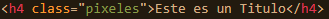
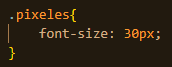
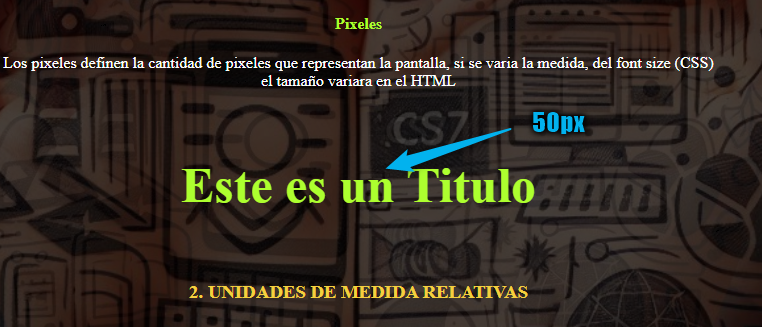
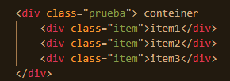
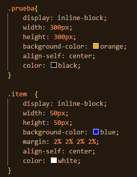

Las unidades de medidas fijas son:
Píxeles. Una unidad fija que representa un punto en la pantalla. La longitud de un píxel depende de la resolución de la pantalla.
Centímetros. Una unidad fija de longitud que representa la longitud física en la pantalla. 1cm es igual a 37.8px.
Milímetros. Una unidad fija de longitud que representa la longitud física en la pantalla. 1mm es igual a 0.1cm o 3.78px.
Pulgadas. Una unidad fija de longitud que representa la longitud física en la pantalla. 1in es igual a 2.54cm o 96px.
Puntos. Una unidad fija de longitud que se utiliza principalmente en la impresión. 1pt es igual a 1/72 de pulgada o 1.33px.
Picas. Una unidad fija de longitud que se utiliza principalmente en la impresión. 1pc es igual a 12 puntos o 16px.
En el HTML, traeremos un h4
por ejemplo, podemos darle a este en el CSS con la propiedad font-size tamaño a la letra de de 20 o 30 px
Y si cambiamos a 50px la letra se hara mas grande
de la misma forma funciona con cm(centimetros), mm(milimetros), pt(puntos), etc, estas medidas no son relativas a nada
es decir que estos tamaños se basan en unidades de medida especifica, sin embargo, existen otras unidades de medida que
si son relativas
Las unidades de medida relativas se dan uando un componente, varia su tamaño respecto a su contenedor,
en el siguiente ejemplo el contenedor seria el naranja y los items serian los azules
Relativa al tamaño de la fuente del elemento actual. Por ejemplo, si el tamaño de la fuente de un elemento es de 16px, 2em sería 32px.
Relativa al tamaño de la fuente del elemento raíz (generalmente ). Si el tamaño de la fuente del elemento raíz es 16px, entonces
1rem siempre será 16px, independientemente del contexto del elemento.
Relativa al tamaño del elemento padre. Por ejemplo, width: 50% hace que el ancho del elemento sea el 50% del ancho del elemento padre.
Relativa al ancho del viewport (ventana del navegador). 1vw es igual al 1% del ancho del viewport.
Relativa a la altura del viewport. 1vh es igual al 1% de la altura del viewport.
Relativa al menor valor entre el ancho y la altura del viewport. 1vmin es igual al 1% del menor valor entre el ancho y la altura del viewport.
Relativa al mayor valor entre el ancho y la altura del viewport. 1vmax es igual al 1% del mayor valor entre el ancho y la altura del viewport.
Relativa a la altura de la letra 'x' (generalmente la altura de la minúscula 'x') en la fuente del elemento actual.
Relativa al ancho del carácter '0' en la fuente del elemento actual.
En el HTML y CSS siguiente, por ejemplo las medidas serian fijas
Y en CSS
Quedaria:
Pero podriamos hacerlas relativas obteniendo:
Tendriamos como resultado el mismo HTML
Sin embargo al cambiar el tamño de la pantalla, se conservara la medida relativa a su contenedor
(si no se reproduce automaticamente dale play ▶ )